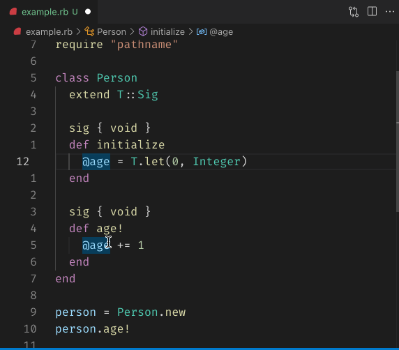

Class: RubyLsp::Requests::DocumentHighlight
- Inherits:
-
BaseRequest
- Object
- SyntaxTree::Visitor
- BaseRequest
- RubyLsp::Requests::DocumentHighlight
- Extended by:
- T::Sig
- Defined in:
- lib/ruby_lsp/requests/document_highlight.rb
Overview

The document highlight informs the editor all relevant elements of the currently pointed item for highlighting. For example, when the cursor is on the F of the constant FOO, the editor should identify other occurences of FOO and highlight them.
For writable elements like constants or variables, their read/write occurrences should be highlighted differently. This is achieved by sending different “kind” attributes to the editor (2 for read and 3 for write).
Example
FOO = 1 # should be highlighted as "write"
def foo
FOO # should be highlighted as "read"
end
Constant Summary collapse
- VarNodes =
T.type_alias do T.any( SyntaxTree::GVar, SyntaxTree::Ident, SyntaxTree::IVar, SyntaxTree::Const, SyntaxTree::CVar ) end
Instance Method Summary collapse
-
#initialize(document, position) ⇒ DocumentHighlight
constructor
A new instance of DocumentHighlight.
- #run ⇒ Object
- #visit_var_field(node) ⇒ Object
- #visit_var_ref(node) ⇒ Object
Methods inherited from BaseRequest
Constructor Details
#initialize(document, position) ⇒ DocumentHighlight
Returns a new instance of DocumentHighlight.
39 40 41 42 43 44 45 |
# File 'lib/ruby_lsp/requests/document_highlight.rb', line 39 def initialize(document, position) @highlights = T.let([], T::Array[LanguageServer::Protocol::Interface::DocumentHighlight]) position = Document::Scanner.new(document.source).find_position(position) @target = T.let(find(document.tree, position), T.nilable(VarNodes)) super(document) end |
Instance Method Details
#run ⇒ Object
48 49 50 51 52 53 54 |
# File 'lib/ruby_lsp/requests/document_highlight.rb', line 48 def run # no @target means the target is not highlightable return [] unless @target visit(@document.tree) @highlights end |
#visit_var_field(node) ⇒ Object
57 58 59 60 61 62 63 64 65 66 |
# File 'lib/ruby_lsp/requests/document_highlight.rb', line 57 def visit_var_field(node) if matches_target?(node.value) add_highlight( node.value, LanguageServer::Protocol::Constant::DocumentHighlightKind::WRITE ) end super end |
#visit_var_ref(node) ⇒ Object
69 70 71 72 73 74 75 76 77 78 |
# File 'lib/ruby_lsp/requests/document_highlight.rb', line 69 def visit_var_ref(node) if matches_target?(node.value) add_highlight( node.value, LanguageServer::Protocol::Constant::DocumentHighlightKind::READ ) end super end |